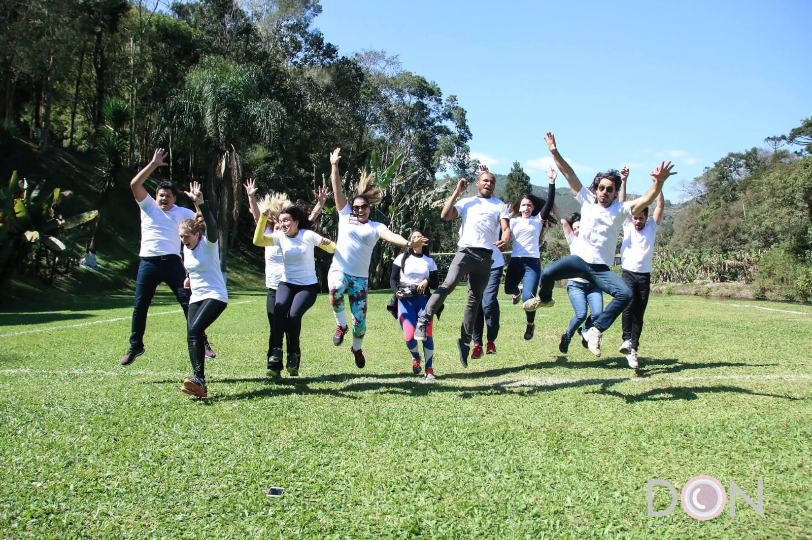
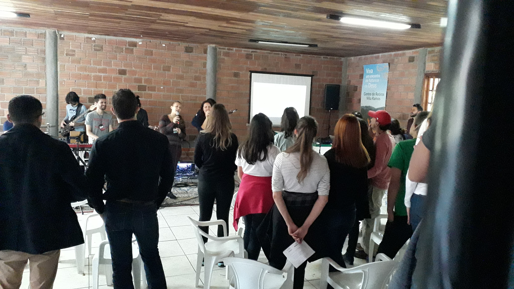
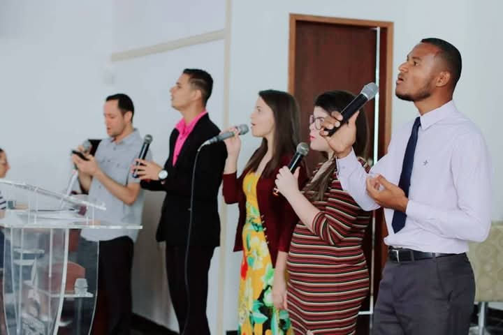
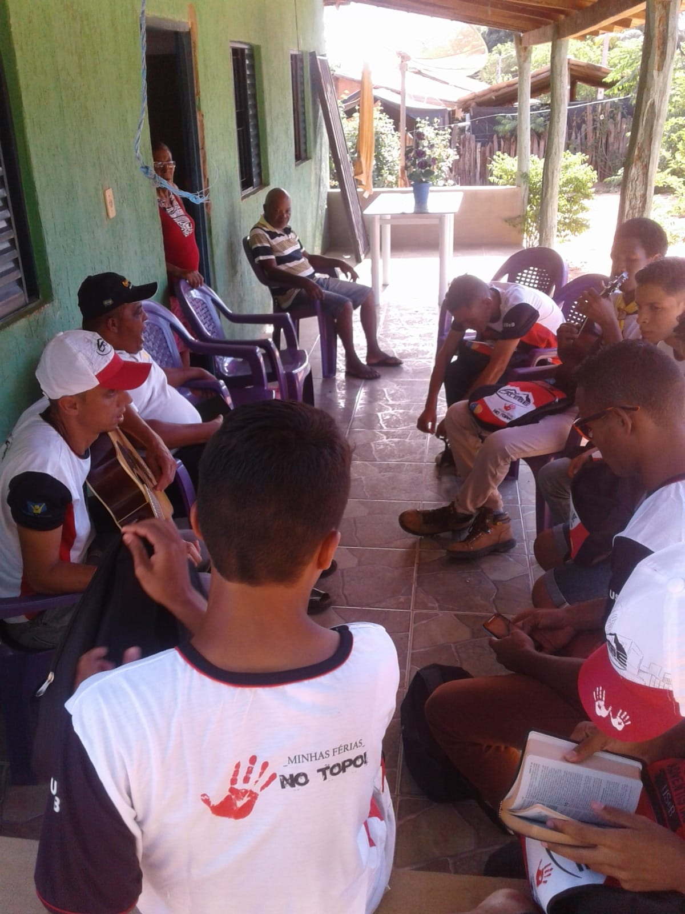
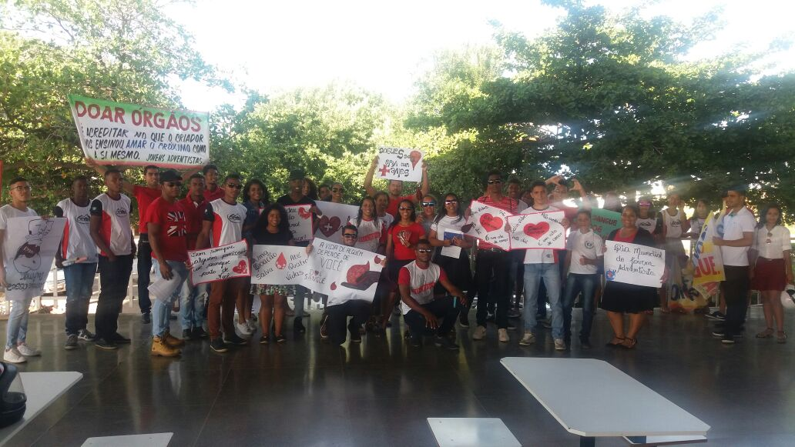

Valdir Barboza Sales
Olá! Meu nome é Valdir Barboza Sales, tenho 32 anos, sou casado há 4 anos, e sou natural de Janúaria-MG mas atualmente moro em Curitiba e sou apaixonado por tecnologia, desenvolvimento web e tudo o que envolve criatividade. Também tenho um grande envolvimento com minha igreja, sou Adventista do Sétimo Dia, gosto de cantar e participo da Missão Calebe - um projeto voltado para servir a comunidade e levar esperança às pessoas por meio do evangelismo, ações solidárias e apoio espiritual, com visitas e atividades voltadas a toda a comunidade. Gosto muito de participar de retiros espirituais, momentos que fortalecem minha fé e me aproximam ainda mais de Deus e das pessoas.
- Participar dos retiros espirituais
- Cantar na igreja
- Participar da missão calebe
- Desenvolver projetos web
Nestas imagens, compartilho minha experiência durante o retiros espirituais

Me sinto feliz e abençoado quando canto na igreja
Ser calebe é mais do que uma missão, é um chamado para servir com fé, coragem e amor.
Através da Missão Calebe, participo de projetos que fazem a diferença na vida das pessoas.
Países que eu gostaria de conhecer
| Países | Imagens |
|---|---|
| Canadá | |
| Grécia |  |
| Itália |
Visite meu canal no YouTube: Programando com Valdir